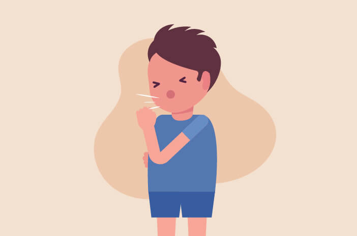

What Is Cough?
A cough is your body's way of responding when something irritates your throat or airways. An irritant stimulates nerves that send a message to your brain. The brain then tells muscles in your chest and abdomen to push air out of your lungs to force out the irritant.
An occasional cough is normal and healthy. A cough that persists for several weeks or one that brings up discolored or bloody mucus may indicate a condition that needs medical attention.
At times, coughing can be very forceful. Prolonged, vigorous coughing can irritate the lungs and cause even more coughing. It is also exhausting and can cause sleeplessness, dizziness or fainting, headaches, urinary incontinence, vomiting, and even broken ribs.
What Drugs Can Cure Cough?
OTC medicines are medicines you can buy at a drugstore without a prescription from your doctor. There are 2 types of OTC cough medicines: antitussives and expectorants. A common antitussive is dextromethorphan (some brand names: Triaminic Cold and Cough, Robitussin Cough, Vicks 44 Cough and Cold). The only expectorant available in OTC products is guaifenesin (2 brand names: Mucinex, Robitussin Chest Congestion).